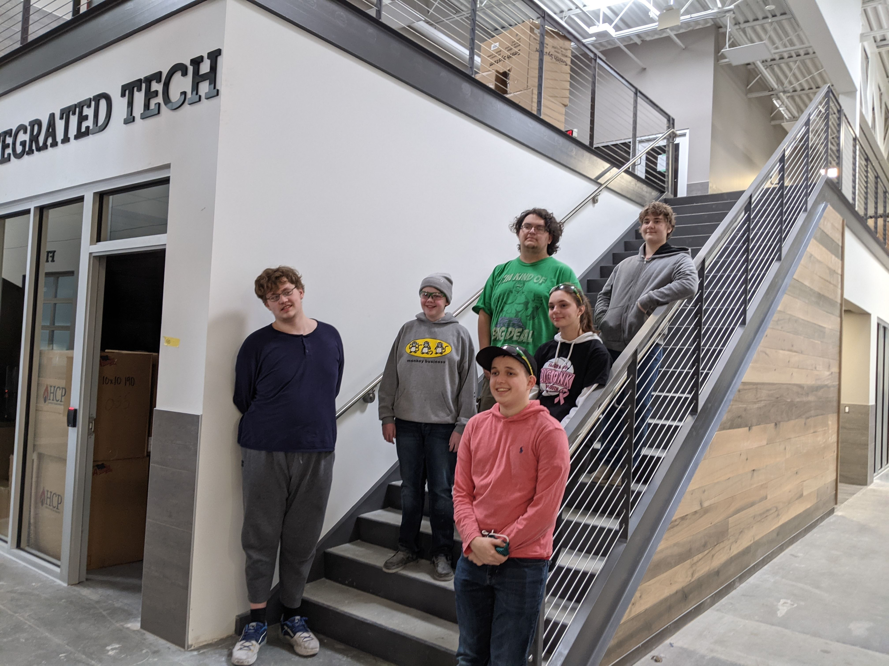

Welcome to Team 7048
Who are we?

We are the Fargo Public Schools FIRST Robotics Competition Team. Every season, we build a brand new robot to compete against other high school teams in a game that changes from year-to-year.
Thinking about joining the team? Have any questions?
About First Robotics
Combining the excitement of sport with the rigors of science and technology. We call FIRST Robotics Competition the ultimate Sport for the Mind. High-school student participants call it “the hardest fun you’ll ever have.” Under strict rules, limited time and resources, teams of students are challenged to raise funds, design a team "brand," hone teamwork skills, and build and program industrial-size robots to play a difficult field game against like-minded competitors. It’s as close to real-world engineering as a student can get. Volunteer professional mentors lend their time and talents to guide each team. Each season ends with an exciting FIRST Championship.
"FIRST is more than just robots. The robots are a vehicle for students to learn important life skills. Kids often come in not knowing what to expect - of the program nor of themselves. They leave, even after the first season, with a vision, with confidence, and with a sense that they can create their own future."
-Dean Kamen (Founder of First)